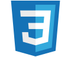
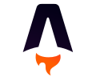

Q01Software Engineering
Landing page
Presentación de un producto, servicio o campaña con una acción principal.
Opciones de implementación

Captación con una página directa
Una landing para presentar su oferta y llevar al visitante a consultar o registrarse. HTML estructura el contenido, CSS define el diseño y JavaScript añade interacciones.

Contenido rápido y fácil de ampliar
Astro organiza las secciones, TypeScript ayuda a mantener el código y Tailwind unifica el diseño. Adecuado para campañas y contenido con pocas funciones de aplicación.
El stack y el despliegue se eligen según sus sistemas, presupuesto y requisitos. Los ejemplos no implican que todas las tecnologías sean necesarias.
Ver entregables
- Página adaptable a móvil
- Contenido, imágenes y llamada a la acción
- Publicación y formulario según alcance
Video del proyecto · próximamente